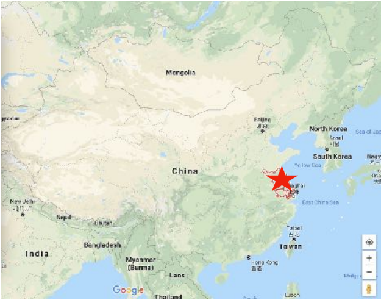

Jiangsu Cuisine 苏菜 Sūcài

Jiangsu Cuisine 苏菜 Sūcài —Fresh, moderately salty and sweet, precise cooking techniques, favoring seafood, soups and artistic, colorful presentation.
Jiangsu Cuisine 苏菜 Sūcài —Fresh, moderately salty and sweet, precise cooking techniques, favoring seafood, soups and artistic, colorful presentation.
Jiangsu cuisine is one of the lesser known of the Eight Great Cuisines of China among foreigners. Jiangsu Province has the highest per capita income. Probably for this reason, the food is more gourmet style. It is very refined and presented colorfully and artistically.